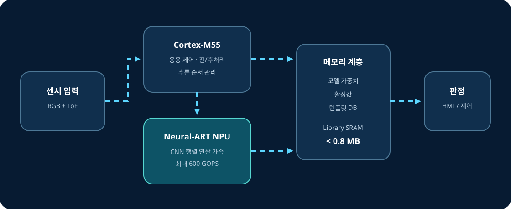

600
GOPS
STM32N6 Neural-ART의 최대 공개 처리 성능. 특정 모델의 실제 fps와 같은 뜻은 아닙니다.
06 · Technical guide
Cortex-M55는 응용 흐름을 관리하고, Neural-ART는 계산량이 큰 신경망 연산을 가속하는 역할 분담으로 이해할 수 있습니다.
Execution model
STM32N6는 범용 제어 코어와 AI 전용 가속기를 함께 갖춘 MCU입니다. MicroFace의 neural workload는 Neural-ART에서 가속됩니다.

STM32N6 Neural-ART의 최대 공개 처리 성능. 특정 모델의 실제 fps와 같은 뜻은 아닙니다.
ST case study에 공개된 모델의 학습 가능 파라미터 규모.
공개된 6.02×10⁸ multiply-accumulate 연산량.
GOPS vs latency
지원 연산, 데이터형, clock, 메모리 공급이 이상적인 조건에서의 플랫폼 지표입니다.
operator 배치, 메모리 이동, 전·후처리, 입력 크기, compiler 최적화가 함께 영향을 줍니다.
이 데모를 설명할 때는 8/20/60/4.5 ms의 기능별 측정 결과와 600 GOPS 플랫폼 사양을 서로 다른 종류의 지표로 제시합니다.
각 모델의 어느 연산이 NPU·CPU에서 수행되는지, fallback이 있는지, precise DCMIPP usage가 무엇인지는 공개 확인되지 않았습니다.